철도신호산업기사 (2020-06-06 기출문제)
1과목: 전자공학
1. 차동증폭기에 대한 설명 중 틀린 것은?
- 연산증폭기 입력측에 주로 사용된다.
- 두 입력의 차에 해당하는 신호를 증폭한다.
- 차동증폭기의 성능은 동상 제거비의 크기에 따라 결정된다.
- 이상적인 차동증폭기는 동상신호 제거비가 0인 경우이다.
(정답률: 60%)

2. 다음 중 반도체의 도전성에 대한 설명으로 적합하지 않은 것은?
- p형 반도체의 반송자는 대부분 정공이다.
- n형 반도체의 반송자는 대부분 전자이다.
- 진성 반도체의 반송자는 전자가 정공보다 많다..
- 전자와 정공 중에서 많은 쪽의 반송자를 다수 반송자라 한다.
(정답률: 47%)
3. 잡음 여유도(Noise Margin)란?
- 입력에 허용되는 잡음 전압의 변동값
- 출력에 나타나는 잡음 전압의 변동값
- 입력 대 출력의 비
- 출력이 변동하는 입력의 잡음
(정답률: 46%)
4. 다음 연산 증폭기의 전압 이득 Av는?
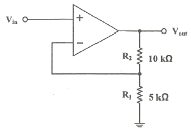
- 2
- 3
- 5
- 10
(정답률: 40%)
5. FM 변조방식에 대한 설명 중 옳은 것은?
- 외부잡음의 영향이 적다.
- 캐리어가 100kHz대에서 많이 사용한다.
- 주수가 불안정하다.
- 전압 변조 방식이다.
(정답률: 65%)
6. 다음 중 FET 증폭회로의 응용으로 가장 적합한 것은?
- 신호원 임피스던스가 높은 증폭기의 초단
- 주파수 안정도를 높일 필요가 있는 증폭기의 끝단
- 신호원 임피스던스가 높은 증폭기의 중간단
- 신호원 임피스던스가 높은 증폭기의 끝단
(정답률: 49%)
7. 다음 다링톤(Darlington) 회로의 전류 증폭률은? (단, β1=10, β2=20이다.)
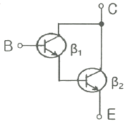
- 20
- 50
- 100
- 200
(정답률: 67%)
8. 플립플롭이 포함된 회로가 아닌 것은?
- 레지스터
- 반가산기
- 카운터
- SRAM
(정답률: 40%)
9. 다음 연산 증폭기에 대한 설명 중 틀린 것은?
- 입력 바이어스 전류는 츨력 전압이 0일 때, 두 입력 전류의 평균값으로 표시한다.
- 입력 바이어스 전류는 증폭기를 적절한 동작 영역에 있게 하기 위한 직류전류이다.
- 입력 오프셋 전류는 출력 전압이 0일 떄, 두 입력 전류의 차로 표시한다.
- 입력 오프셋 전압은 출력 전압이 0일 때, 두 입력 전류의 합으로 표시한다.
(정답률: 54%)
10. PN 접합 다이오드에서 전위 장벽에 대한 설명으로 옳은 것은?
- PN 접합 다이오드에 역방향 바이어스를 인가하면 전위 장벽은 낮아진다.
- PN 접합 다이오드의 공핍층이 넓어지면 전위 장벽은 낮아진다.
- PN 접합 다이오드의 공핍층이 좁아지면 전의 장벽은 변화가 없다.
- 전위 장벽은 PN 접합 사이의 전위차이다.
(정답률: 62%)
11. 다음의 발징회로에서 Z3에 L(인덕터)을 연결하였을 때 발진하기 위한 Z1, Z2의 조건으로 가장 적합한 것은?
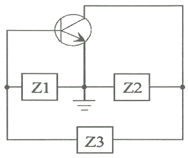
- Z1, Z2: 용량성
- Z1, Z2: 유도성
- Z1: 유도성, Z2: 용량성
- Z1: 용량성, Z2: 유도성
(정답률: 54%)
12. 펄스의 주파수가 100Hz, 폭이 2ms이고 평균전력이 5W일 떄, 펄스의 첨두전력은?
- 10W
- 20W
- 25W
- 50W
(정답률: 52%)
13. 적분기에서 귀환소자는 어떤 것을 사용하는가?
- 저항
- 커패시터
- 제너다이오드
- 트랜지스터
(정답률: 57%)
14. 가변 직류 전원에 의해 주파수 가변이 가능한 발진기는?
- 윈브리지 발진기
- RC 발진기
- 수정발진기
- VOC
(정답률: 49%)
15. 펄스신호에서 하강시간(Fall Time)의 범위는?
- 100~0%
- 100~10%
- 90~10%
- 90~0%
(정답률: 63%)
16. 트랜지스터 전류증폭 β가 19일 때 α의 값은?
- 0.95
- 0.98
- 0.947
- 1.⑤
(정답률: 49%)
17. 8진수 347(8)을 10진수로 표현하면?
- 96
- 160
- 191
- 231
(정답률: 65%)
18. 다음 정류회로의 구성 중에서 A에 들어갈 파형으로 가장 적절한 것은? (단, G는 Ground이다.)
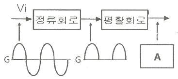
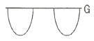
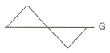
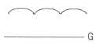
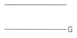
(정답률: 57%)
19. 메모리 내용을 보존하기 위하여 주기적으로 리프레쉬(refresh)해야 하는 메모리는?
- PROM
- EPROM
- SRAM
- DRAM
(정답률: 57%)
20. 어떤 증폭기의 입력 전력이 20mW이고 촐력이 20W이면, 이 증폭기의 이득은 몇 dB인가?
- 30
- 40
- 50
- 60
(정답률: 46%)
2과목: 신호기기
21. 어떤 정류기 부하 전압이 2000V이고 맥동률이 3%이면 교류분은 몇 V 포함되어 있는가?
- 20
- 30
- 50
- 60
(정답률: 66%)
22. 철도건널목 전동차단기에 사용하는 전동기로 가장 많이 사용되는 전동가는?
- 직류 직권전동기
- 직류 분권전동기
- 직류 가동복권전동기
- 직류 차동복권전동기
(정답률: 75%)
23. 차상선로전환기 동작시분은 몇 초 이내여야 하는가?
- 2초
- 3초
- 4초
- 5초
(정답률: 65%)
24. NS형 전기선로전환기에서 쇄정자와 쇄정간흠과의 간격은 합한 치수가 몇 mm 이하여야 하는가?
- 3
- 4
- 5
- 6
(정답률: 43%)
25. 속도조사식 ATS 제어계전기의 입력 단자전압으로 옳은 것은?
- DC 10V ±5%
- DC 10V ±2%
- DC 12V ±20%
- DC 24V ±10%
(정답률: 59%)
26. 출력 10kW, 슬립 4.8%로 운전할 때 2차 동손(W)은 약 얼마인가?
- 204
- 404
- 504
- 804
(정답률: 54%)
27. 직류전동기의 히수테리시수손을 감소시키시 위한 방법으로 가장 적절한 것은?
- 규소강판 사용
- 보극설치
- 성층철심 사용
- 보상권선 설치
(정답률: 68%)
28. 단상 유도 전동기의 기동방식 중 기동 토크가 가장 큰 것은?
- 분상 기동형
- 반발 기동형
- 반발 유도형
- 콘덴서 기동형
(정답률: 55%)
29. 전기 연동장치에서 진로선별회로와 관계없는 것은?
- 선로전환기의 전환과 신호정자를 개별적으로 조작하여 진로를 구성하는 방식
- 출발점 취급버튼과 진로 도착점 취급버튼의 취급에 의해 선별
- 망상회로로 하고 좌행 및 우행회로로 구분
- 신호정자와 진로선별압구의 취급에 의하여 선별
(정답률: 50%)
30. 건널목전동차단기용 전동기의 슬립 전류는 몇 A 이하로 하여야 하는가?
- 1
- 3
- 5
- 7
(정답률: 62%)
31. NS형 전기선로전환기의 동작 순서로 옳은 것은?
- 취급버튼 → 전철제어계전기 → 전환쇄정장치 → 표시회로
- 전철제어계전기 → 취급버튼 → 전환쇄정장치 → 표시회로
- 취급버튼 → 전환쇄정장치 → 전철제어계전기 → 표시회로
- 전철제어계전기 → 전환쇄정장치 → 취급버튼 → 표시회로
(정답률: 63%)
32. 슬립 4%인 유도 전동기의 정지 시 2차 유도기전력이 150V일 때, 운전 시 2차 유도기전력(V)은?
- 6
- 15
- 38
- 60
(정답률: 44%)
33. NS형 전기선로전환기에서 전동기의 강한 회전력을 감소시키고 전달하기 위해 설치되는 것은?
- 마찰클러치
- 감속기어장치
- 전환쇄정장치
- 임피던스 본드
(정답률: 55%)
34. 변압기의 병렬운전 조건으로 틀린 것은?
- %임피던스 강하가 같을 것
- 권수비가 같을 것
- 극성이 같을 것
- 용량이 같을 것
(정답률: 60%)
35. 다음 중 3상 전원에서 2상 전원을 얻기 위한 변압기의 결선방법은?
- △결선
- V결선
- Y결선
- T결선
(정답률: 53%)
36. 변압기 여자전류에 많이 포함된 고조파는?
- 3 고조파
- 4고조파
- 5고조파
- 6 고조파
(정답률: 62%)
37. NS형 전기선로전환기의 제어계전기로 사용하는 것은?
- 무극선조 계전기
- 완동 계전기
- 완방 계전기
- 유극 2위식 자기유지형 계전기
(정답률: 59%)
38. 직류발전기에서 전기자의 주된 역할은?
- 기전력유도
- 자속의 생성
- 정류작용
- 회전체와 외부회로 접속
(정답률: 55%)
39. 건널목 경보기에서 2440형의 발진주파수는?
- 10kHz ± 2kHz
- 20kHz ± 2kHz
- 30kHz ± 2kHz
- 40kHz ± 2kHz
(정답률: 61%)
40. 단상 브리지정류회로에 의해 직류전압 100V를 얻어려면 정류기용 변압기의2차 전압은 약 몇 V로해야 하는가? (단, 부하는 순저항 부하이고, 변압기와 정류회로 내부의 전압강하를 무시한다.)
- 100
- 111
- 128
- 141
(정답률: 44%)
3과목: 신호공학
41. 철도에서 단선구간의 선로용량 N은? (단, T: 역 사이의 평균 열차 운행 시간(분), C: 폐색취급시간(분), f: 선로이용률)
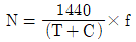
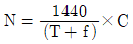
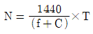
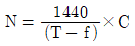
(정답률: 69%)
42. 3현시 폐색구간의 최소운전시격을 구하고자 할 때 필요하지 않는 항목은?
- 폐색구간 길이
- 선행열차 최고속도
- 열차길이
- 신호현시 확인에 요하는 최소거리
(정답률: 65%)
43. 선로전환기가 설치되어 있는 궤도회로를 열차가 점유하고 있을 때 그 선로전환기를 전환할 수 없도록 하는 쇄정은?
- 편쇄정
- 진로구분쇄정
- 접근쇄정
- 철사쇄정
(정답률: 73%)
44. 단선구간에서 자동폐색방식을 구성하여 운용하고자 한다. 이때 가장 필요한 회로는?
- 철사쇄정회로
- 접근쇄정회로
- 방향쇄정회로
- 전철쇄정회로
(정답률: 54%)
45. 선로전환기의 정위 결정법에 대한 설명 중 틀린 것은?
- 본선과 본선 또는 측선과 측선의 경우는 주요한 방향
- 탈선 선로전환기는 탈선시키는 방향
- 본선 또는 측선과 안전 측선(피난선포함)의 경우에는 안전 측선의 방향
- 단선에 있어서 상ㆍ하 본선은 열차의 진출하는 방향
(정답률: 66%)
46. CTC 장치에서 현장설비로 옳은 것은?
- 주관제탁
- 신호관계 콘솔
- MMI 모니터
- LDTS
(정답률: 71%)
47. 유도신호기의 설치에관한 설명으로 틀린 것은?
- 장내신호기에 진행을 지시하는 신호를 현시할 수 있을 때 그 신호기의 방호구역 밖으로 열차를 출발시키고자 할 경우에 설치한다.
- 장내신호기의 하위에 설치하며 이 경우 신호기구와 진로선별등 사이(신호기구 바로 밑)에 설치한다.
- 동일 선로에서 분기하는 열차의 진로에 대하여 장내신호기가 2기 이상 설치된 경우 각각 별도로 설치한다.
- 비자동구간에 설치하는 경우에는 장내신호기의 방호구역에 궤도회로를 설치한다.
(정답률: 49%)
48. 연동장치에 사용되는 21WLR 계전기의 명칭은?
- 선로 전환기 21호의 전철표시계전기
- 선로 전환기 21호의 정위 전철표시반응계전기
- 선로 전환기 21호의 쇄정하는 전철쇄정계전기
- 선로 전환기 21호의 제어하는 전철제어계전기
(정답률: 65%)
49. NS형 전기선로전환기의 구조로 틀린 것은?
- 마찰클러치
- 감속기어장치
- 전환쇄정장치
- 임피던스 본드
(정답률: 74%)
50. 열차운행관리시스템 중 CTC란 무엇인가?
- 열차자동제어장치
- 열차자동운전장치
- 열차집중제어장치
- 열차자동방호장치
(정답률: 78%)
51. 고전압 임펄스 궤도회로 구간에 주로 설치하는 레일 본드 전선의 단면적은?
- 2mm2
- 5.5mm2
- 16mm2
- 25mm2
(정답률: 59%)
52. 연동도표에 기재하지 않아도 되는 것은?
- 소속선명 및 역명
- 열차 종류 및 등급
- 배선약도
- 연동장치 종별
(정답률: 76%)
53. 무유도 표시등이 있는 신호기는?
- 입환신호기
- 폐색신호기
- 유도신호기
- 엄호신호기
(정답률: 46%)
54. 폐색신호기의 설치 위치로 가장 적합한 곳은?
- 폐색구간의 시점에 설치
- 폐색구간의 시점에서 1/3위치에 설치
- 폐색구간의 시점에서 2/3위치에 설치
- 폐색구간의 종점에 설치
(정답률: 63%)
55. 장내신호기는 가장 바깥쪽 선로전환기가 열차에 대하여 대향이 되는 경우에 그 첨단레일의 선단에서 몇 m 이상의 거리를 확보해야 하는가?
- 30
- 60
- 80
- 100
(정답률: 67%)
56. CTC장치의 운영모드에서 운영자 콘솔에 의한 수동제어모드는?
- 자동
- CCM
- Local
- LDM
(정답률: 59%)
57. 차상신호용으로 가장 적합한 형태의 궤도회로 설비로 동조 유니트, 커플링 유니트, 매칭 트랜스 등의 장치로 구성되어 있는 궤도 회로는?
- 정류 궤도회로
- 코드 궤도회로
- AF 궤도회로
- 직류, 교류 혼합 궤도회로
(정답률: 67%)
58. 궤도 계전기가 0.23V에서 낙하하였다. 궤도 계전기의 저항은 약 멀마인가? (단, 여자 전류는 0.038A, 낙하전압은 여자전압의 68%이다.)
- 10Ω
- 9Ω
- 8Ω
- 7Ω
(정답률: 56%)
59. 전기선로전환기의 설치방법으로 틀린 것은?
- 소속하는 분기부가 정위로 개통해 있는 측에 설치함을 원칙으로 한다.
- 설치 쪽 레일 외측에서 선로전환기 중심건까지는 1200mm로 한다.
- 대향우측에 설치할 때는 주 쇄정간이 위쪽에 오도록 설치한다.
- 대향좌측에 설치할 때는 주 쇄정간이 아래쪽에 오도록 설치한다.
(정답률: 64%)
60. 다음 중 궤도회로 단락감도를 높이기 위한 방법으로 틀린 것은?
- 송전단의 임피던스를 최대한 높게 한다.
- 수전단의 임피던스를 최대한 낮게 한다.
- 단락 시의 위상변화를 이용한다.
- 필요 이상의 전압을 궤도계전기에 공급하지 않는다.
(정답률: 59%)
4과목: 회로이론
61. 어떤 회로에 흐르는 전류가 i(t)=7+14.1sinωt(A)인 경우 실효값은 약 몇 A인가?
- 11.2
- 12.2
- 13.2
- 14.2
(정답률: 28%)
62. f(t)=sint+2cost를 라플라스 변환하면?
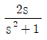
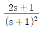
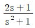
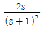
(정답률: 42%)
63. 용량이 50kVA인 단상 변압기 3대를 △결선하여 3상으로 운전하는 중 1대의 변압기에 고장이 발생하였다. 나머지 2대의 변압기를 이용하여 3상 V결선으로 운전하는 경우 최대 출력은 몇 kVA인가?
- 30√3
- 50√3
- 100√3
- 200√3
(정답률: 57%)
64. 그림과 같은 회로에서 5Ω에 흐르는 전류 I는 몇 A인가?
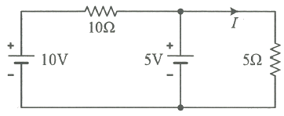
- 1/2
- 2/3
- 1
- 5/3
(정답률: 65%)
65. 푸리에 급수로 표현된 왜평파 f(t)가 반파대칭 및 정현대칭일 때 f(t)에 대한 특징으로 옳은 것은?
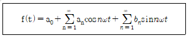
- an의 우수항만 존재한다.
- an의 기수항만 존재한다.
- bn의 우수항만 존재한다.
- bn의 기수항만 존재한다.
(정답률: 41%)
66. ㅍ=50√3-j50(V), I=15√3+j15(A) 일 때 유효전력 P(W)와 무효전력 Q(var)는 각각 얼마인가?
- P=3000, Q=-1500
- P=1500, Q=-1500√3
- P=750, Q=-750√3
- P=2250, Q=-1500√3
(정답률: 44%)
67. RC 직렬회로의 과도 현상에 대한 설명으로 옳은 것은?
- (R×C)의 값이 클수록 과도 전류는 빨리 사라진다.
- (R×C)의 값이 클수록 과도 전류는 천천히 사라진다.
- 과도 잔류는 (R×C)의 값에 관계가 없다.
- 1/R×C의 값이 클수록 과도 전류는 천천히 사라진다.
(정답률: 58%)
68. r1(Ω)인 저항에 r(Ω)인 가변저항이 연결된 그림과 같은 회로에서 전류 I를 최소로 하기 위한 저항 r2(Ω)는? (단, r(Ω)은 가변저항의 최대 크기이다.)
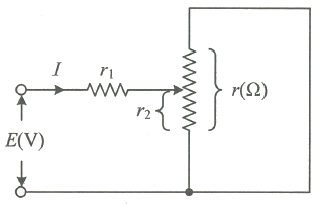
- r1/2
- r/2
- r1
- r
(정답률: 62%)
69. 회로의 4단자 정수로 틀린 것은?
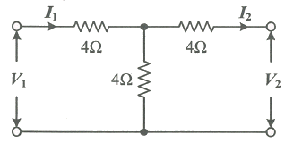
- A=2
- B=12
- C=1/4
- D=6
(정답률: 49%)
70. 파형율과 파고율이 모두 1인 파형은?
- 고조파
- 삼각파
- 구형파
- 사인파
(정답률: 58%)
71. 그림과 같은 4단자 회로망에서 출력 측을 개방하니 V1=12V, I1=2A, V2=4V이고, 출력 측을 단락하니 V1=16V, I1=4A, I2=2A이었다. 4단자 정수 A, B, C, D는 얼마인가?
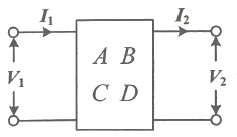
- A=2, B=3, C=8, D=0.5
- A=0.5, B=2, C=3, D=8
- A=8, B=0.5, C=2, D=3
- A=3, B=8, C=0.5, D=2
(정답률: 50%)
72. 그림과 같은 회로에서 L2에 흐르는 전류 I2(A)가 단자전압 V(V)보다 위상이 90°뒤지기 위한 조건은? (단, ω는 회로의 각주파수(rad/s)이다.)
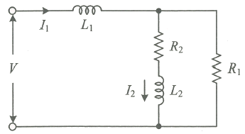
- R2/R1=L2/L1
- R1R2=L1L2
- R1R2=ωL1L2
- R1R2=ω2L1L2
(정답률: 50%)
73. 다음과 같은 회로에서 Va, Vb, Vc(V)를 평형 3상 전압이라 할 때 전압 V0(V)은?
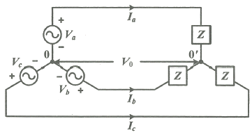
- 0
- V1/3
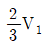
- V1
(정답률: 54%)
74. Z=5√3+j5(Ω)인 3개의임피던스를 Y결선하여 선간전압 250V의 평형 3상 전원에 연결하였다. 이때 소비되는 유효전력은 약 몇 W인가?
- 3125
- 5413
- 6252
- 7120
(정답률: 45%)
75. 각 상의 전류가 ia=30sinωt(A), ib=30sin(ωt-90°)(A), ic=30sin(ωt+90°)(A)일 때 영상분 전류(A)의 순서치는?
- 10sinωt
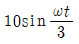
- 30sinωt
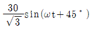
(정답률: 47%)
76. 그림과 같은 회로의 전달함수는? (단, 초기조건은 0이다.)
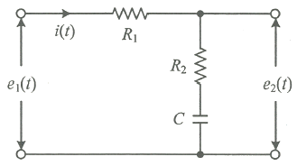
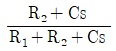
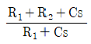
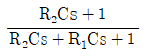
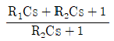
(정답률: 57%)
77. 9Ω과 3Ω인 저항 6개를 그림과 같이 연결하였을 때, a와 b 사이의 합성저항(Ω)은?
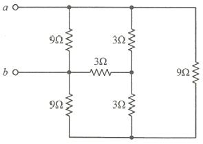
- 9
- 4
- 3
- 2
(정답률: 49%)
78. 어떤 전지에 연결된 외부 회로의 저항은 5Ω이고 전류는 8A가 흐른다. 외부 회로에 5Ω 대신 15Ω의 저항을 접속하면 전류는 4A로 떨어진다. 이 전지의 내부 기전력은 몇 V인가?
- 15
- 20
- 50
- 80
(정답률: 49%)
79. 전류의 대칭분이 I0=-2+j4(A), I1=6-j5(A), I2=8+j10(A일 때 3상전류 중 a상 전류(Ia)의 크기(|Ia|)는 몇 A인가? (단, I0는 영상분이고, I1은 정상분이고, I2는 역상분이다.)
- 9
- 12
- 15
- 19
(정답률: 40%)
80. 그림과 같은 회로에서 스위치 S를 t=0에서 닫았을 때
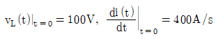
이다. L(H)의값은?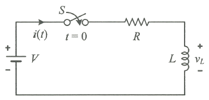
- 0.75
- 0.5
- 0.25
- 0.1
(정답률: 40%)